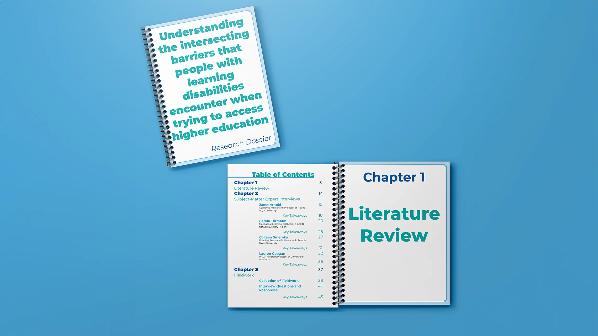
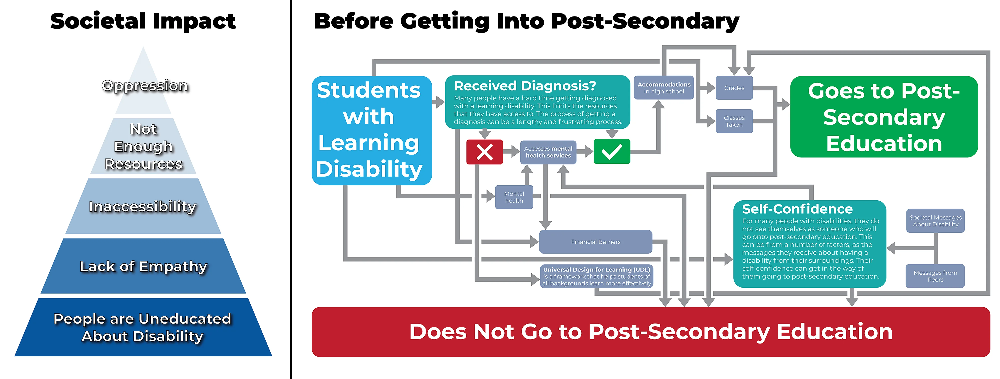
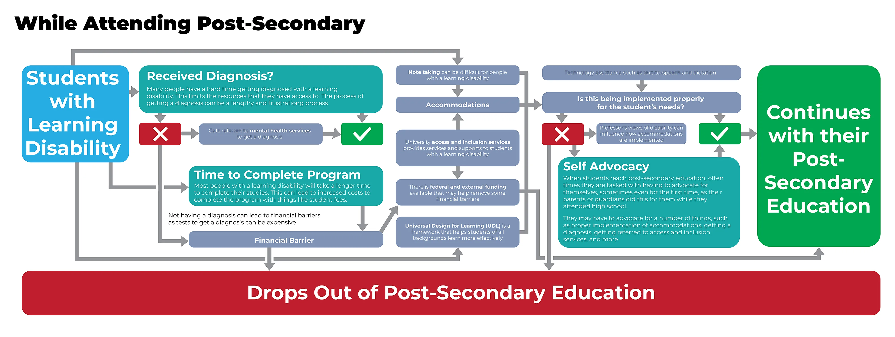
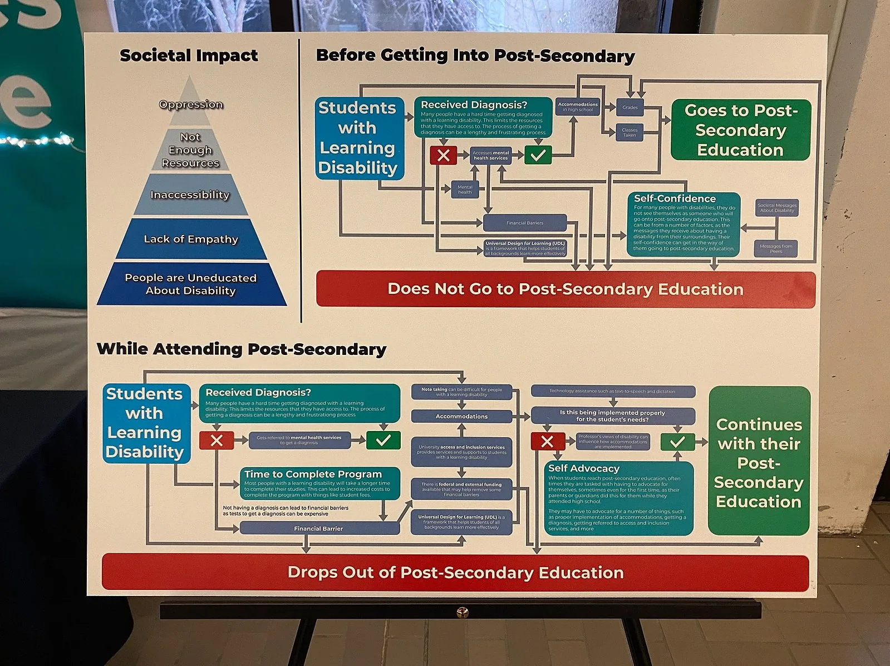
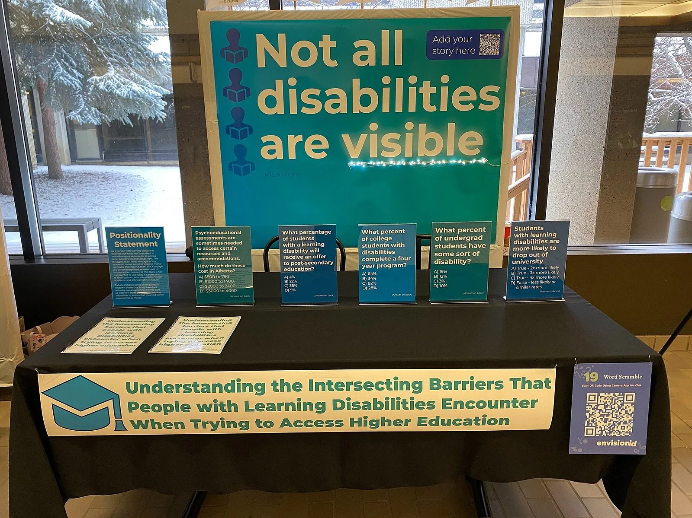
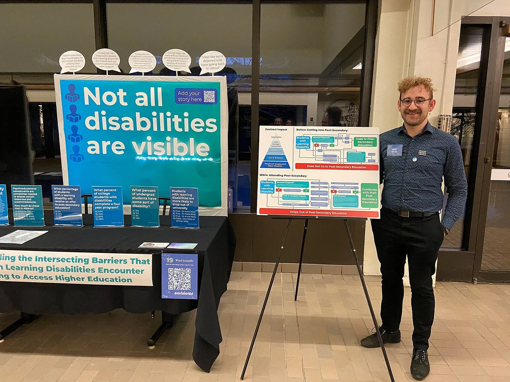
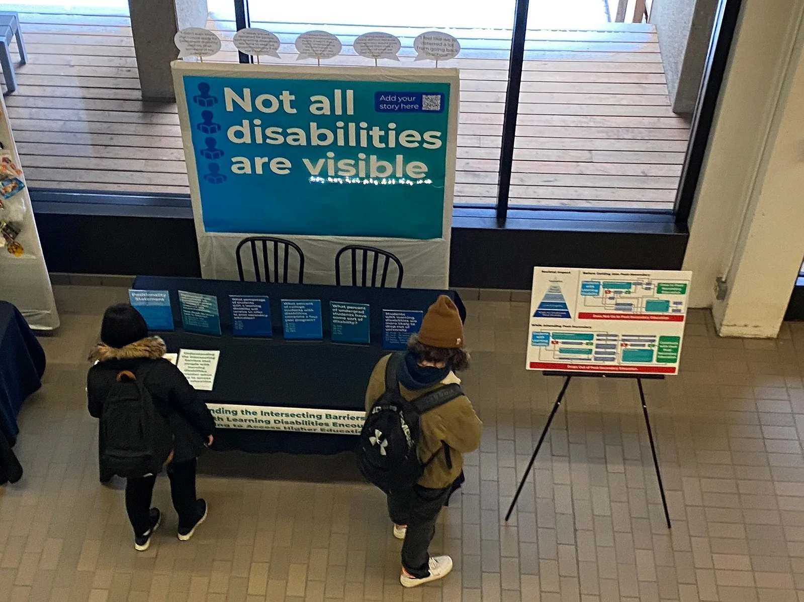

Capstone Project
Project Overview
For my capstone project, I conducted extensive research on the intersecting barriers that individuals with learning disabilities face when trying to access higher education. The aim of the project was to understand the various obstacles that these individuals encounter and to develop recommendations for institutions to improve accessibility and inclusivity.
Topic
Understanding the intersecting barriers that people with learning disabilities encounter when trying to access higher education.
This topic evolved from my previous work, researching Universal Design for Learning (UDL) in my prototype. I chose this topic as what emerged from this research is that there is barriers that prevent people with learning disabilities to get to post-secondary in the first place, whereas UDL is for students that are already in university.
Research Synthesis Diagrams


Research
My research had three parts. First, a literature review of academic sources and policy documents, including quantitative data from sources such as Statistics Canada. Second, interviews with four subject-matter experts: a manager at a learning disabilities and ADHD network, an academic advisor and professor, a disability resource facilitator, and a university assistant professor. Third, fieldwork interviews with six people with diagnosed learning disabilities, including people who completed their degrees and people who dropped out.
Fieldwork participants signed release waivers allowing their responses to be shared online with their names removed.
Key Findings
Through my research, I identified several key barriers for people with learning disabilities in accessing higher education. Participants described difficulty accessing accommodations (many did not apply, did not use them, or were not eligible because they were diagnosed late), limited awareness of existing financial supports, and a heavy toll on their mental health. The expert interviews added self-advocacy and high school grades as barriers to getting into post-secondary education in the first place. This research was done to complete the Research Synthesis Diagrams.
Exhibition
The exhibition for presenting these findings occurred in 2022 at Mount Royal University. The exhibit was left up for 3 days to allow people on campus to view the findings that could not attend the exhibition. The exhibition aimed to raise awareness on campus of the barriers people with learning disabilities face when accessing higher education.



